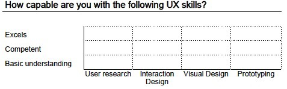

Hey Aaron-
Oi this has hidden at the bottom of my inbox for a while now. After a few lazy days of break (eating/napping/movies/repeat) i'm ready to wake up! Hope you are having a Merry Christmas (if you celebrate christmas)!
If you are still looking for your next gig...
I think you could actually sell yourself as a few different types of role. UX designer. Front-end developer. Front-end prototyper. UI/Visual designer. Sigh isn't our profession confusing? Actually, you are actually the infamous unicorn designer.
How would you fill out this chart? I found Irene Au's medium posts (written for design employers) actually really useful for my own self reflection as a designer. https://medium.com/@ireneau/writing-a-job-description-for-ux-people-bcad01be93b0

Based on this, i'm happy to flag any job postings I hear of. I find by just having an updated portfolio online and an up to date linkedin, i get a few inbound requests, though most of them aren't mission-driven companies or solving interesting/meaningful problems.
If you are looking for short-term contract gigs, it might be helpful to reach out to some of the design recruiters in the area. I've only known these ladies personally (from frog days), http://www.talent-farm.com/ - ex frog recruiters
But i've heard good things about some of these recruiters:
- Judy Wert specializes in product design leaders and leadership roles
- Amy Jackson specializes in individual contributor roles for product design
- Stephanie Shapiro
- Aquent specializes in visual design talent
They will probably ask to see a portfolio and resume. I'm not sure what type of portfolio you need as a visual designer or front-end developer, but here are some of my favorite UX designer portfolios. Mine is definitely not up to par right now, but i'm hoping to update mine in the next year:
- Andrew Kim designer from Art Center: http://www.minimallyminimal.com/blog/america-elect
- Pinterest ux designer from cmu: http://www.jedmund.com/
- Jawbox ux designer - uses squarespace: http://dayn-wilberding.squarespace.com/#/the-jawbone-app/
- http://www.quora.com/What-are-some-good-examples-of-UX-portfolios
Hope that's helpful Aaron. Happy to meet up after the holidays in SF to catchup as well!
Cheers and hugs,
Suelyn